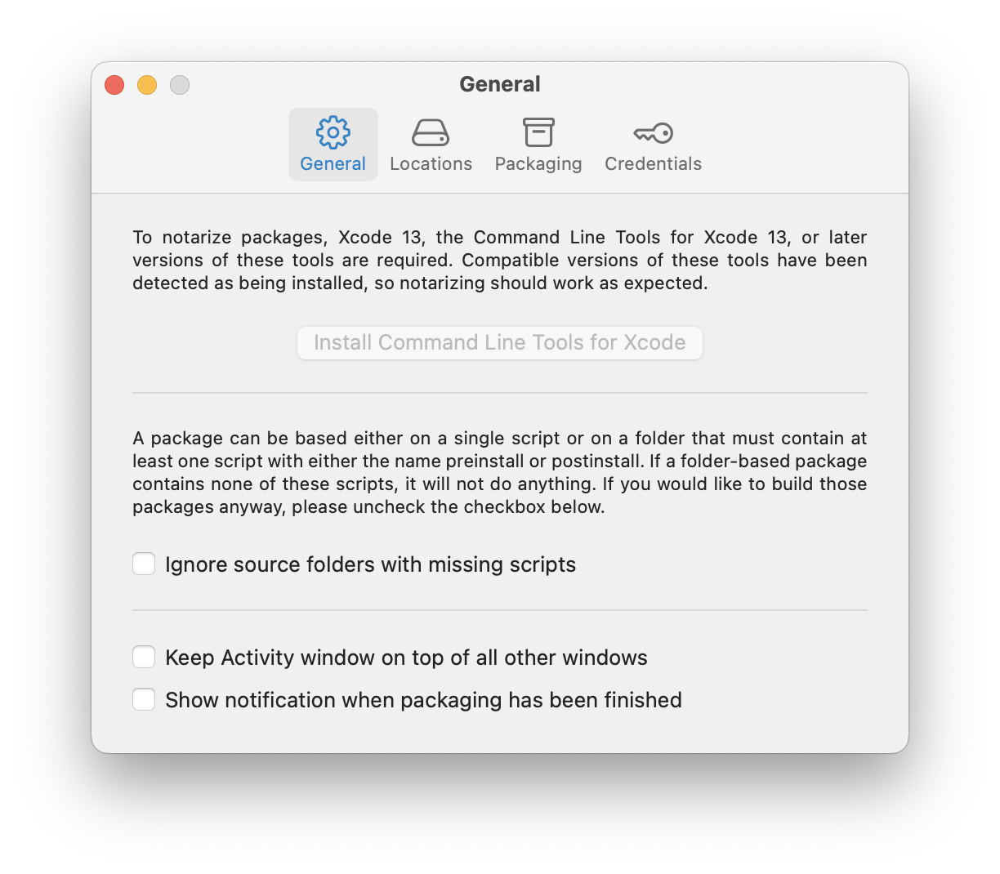

Script2Pkg
Script2Pkg
Script2Pkg
Installing support tools
To notarize installer packages, Xcode 13, the Command Line Tools for Xcode 13, or later versions of these tools are required. If compatible versions of these tools are not installed, the app can assist with installing the Command Line Tools for Xcode. To do this, use the following procedure:
1. Go to the Script2Pkg menu and select Settings…

2. Select the General option.

3. Click the Install Command Line Tools for Xcode button to install the Command Line Tools for Xcode. This process uses Apple’s tools for installing the Command Line Tools for Xcode and may take five to ten minutes to complete.
4. Once installed, the Install Command Line Tools for Xcode button will appear as grayed out.
